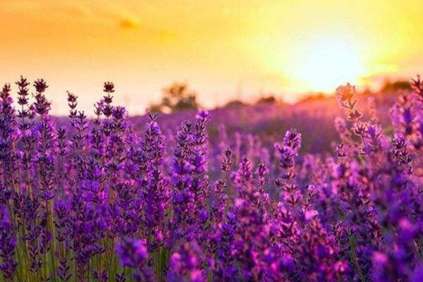

普罗旺斯Provence
如果有人来普罗旺斯是为了追寻骑士的脚步，那也一定有人是为了看一看薰衣草，那在电视剧《薰衣草》里让人着迷的蓝紫色小花， 是普罗旺斯的标志。七八月间的薰衣草迎风绽放，浓艳的色彩装饰着翠绿的山谷，微微辛辣的香味混合着被晒焦的青草芬芳，交织成 法国南部最令人难忘的气息。这种多彩的爱情小花盛开在鲁伯隆山区和施米亚那山区。阳光洒在薰衣草花束上，是一种泛蓝紫色的金 色光彩。当暑期来临，整个普罗旺斯好像穿上了紫色的外套，香味扑鼻的薰衣草在风中摇曳。
